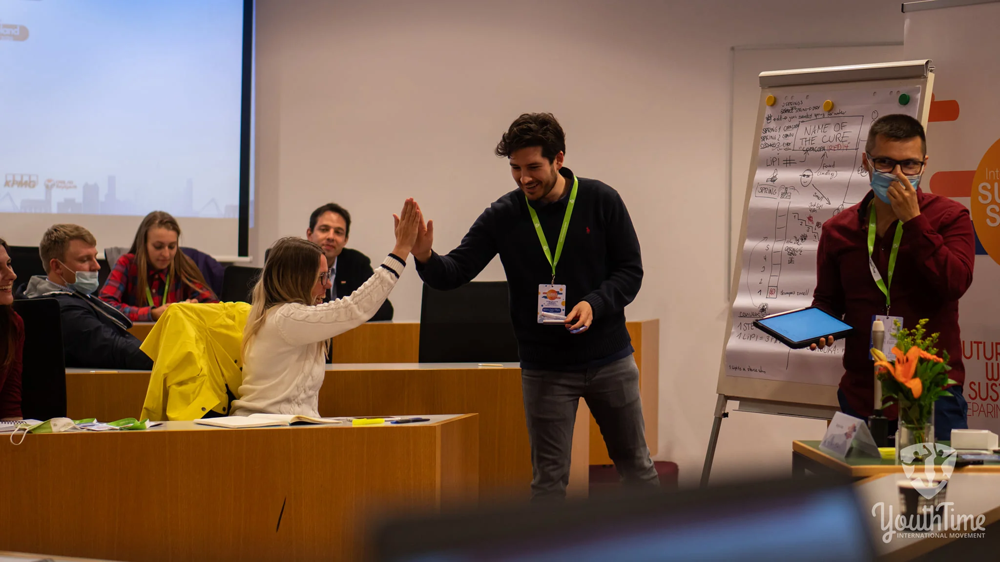

★★★★★
Abraza la incertidumbre y toma acción
¡Recomiendo este libro a emprendedores, innovadores, estudiantes o cualquiera buscando su camino en este momento! Si buscas inspiración o guía, este libro es para ti.
Terminaste el colegio, o estás por terminar. Todos te preguntan qué vas a hacer, y la respuesta real es: todavía no sabes. El mundo cambia más rápido de lo que nadie puede explicar, y quieres ser parte de eso, no que te pase por encima. Innovación Inestable es un libro corto y práctico para exactamente este momento.

No te da un plan de carrera. Te ayuda a entenderte a ti y al mundo lo suficiente para elegir tu siguiente paso, y comprometerte con él.
La aceleración, no la velocidad, es lo que impulsa el cambio. El libro repasa las megatendencias de la próxima década, de la inteligencia artificial a la geopolítica, para que veas hacia dónde van las oportunidades.
La vida da oportunidades desiguales. El libro muestra cómo reconocer tu momento de la verdad, y por qué dudar puede costarte la oportunidad.
Contar historias, pensar en imágenes, modelar negocios, hacer video. Nelson comparte las habilidades que más le han servido, y cómo las aprendió.
Una de las preguntas favoritas del libro: “¿Cómo puedo hacer que este problema sea diez mil veces peor?”. Luego haz lo contrario.
“Los logros extraordinarios vienen de hacer cosas ordinarias durante períodos extraordinarios de tiempo.” Alex Hormozi, citado en el libro.
La eudaimonía, la idea griega de florecer, y el poder de decir no a todo lo que no te acerca a ella.
No. Si sueñas con crear una empresa, genial. Si no, también está bien.
Innovación Inestable trata de convertirte en alguien que crea y aporta valor, ya sea como empleado, freelance, investigador o fundador. Lo que importa es la mentalidad: curiosidad, compromiso y el valor de actuar cuando llegue tu momento.
Será difícil. Quizás sea lo más difícil que hayas hecho en toda tu vida, pero vas a perseverar.
Nelson Inno, Innovación Inestable
¡Recomiendo este libro a emprendedores, innovadores, estudiantes o cualquiera buscando su camino en este momento! Si buscas inspiración o guía, este libro es para ti.
Este libro fue muy provocador e inspirador. Después de leerlo, me siento más motivado para crear valor en el mundo.
Tanto si ya prosperas en la innovación como si te sientes creativamente estancado, este libro te da un empujón en la dirección correcta.
Si tiene veintitantos y todavía está buscando, este libro es un empujón suave, no un sermón. Si es más joven, mira nuestra página para padres de adolescentes, con nueve preguntas para conversar juntos.
Sí. Está escrito para personas que sienten que el mundo cambia rápido y quieren un papel en él. Ayuda a los jóvenes a leer las grandes tendencias, reconocer su momento de la verdad y comprometerse con un problema que valga la pena.
No. No te da un plan. Te ayuda a entenderte y a ver oportunidades, para que la decisión sea tuya y mejor informada.
Sí. El libro trata de convertirte en alguien que crea y aporta valor, ya sea como empleado, freelance, investigador o fundador.
Unas 240 páginas en 9 capítulos. La mayoría lo lee en unas 3 a 4 horas.
El PDF, EPUB y Kindle son gratis en este sitio. El libro impreso está en Amazon y en Librería Internacional en El Salvador.
Léelo gratis hoy, o consigue el libro impreso y llénalo de notas.